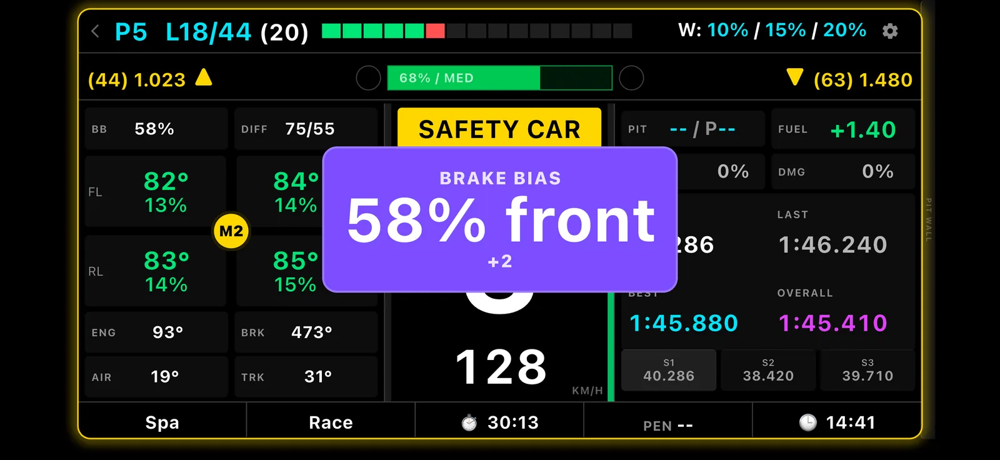
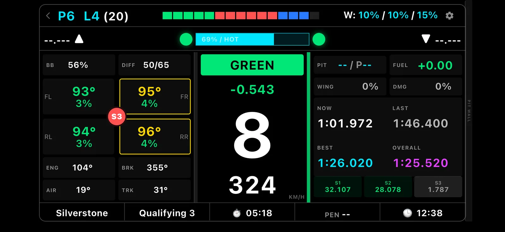

How it works
The live Dashboard
Read the Dashboard at a glance, open the full-screen live trace with one tap, and reach the Pit Wall from the bar on the right.
Your race at a glance
Open the Dashboard from the Home screen. It turns to landscape and waits for your game's telemetry, then fills in as soon as packets arrive.
Everything you need while driving stays on one screen, with nothing to scroll and no menus to open.
- Top bar: your position, the lap counter with the number of cars still running in brackets, the shift lights, and the rain forecast for 5, 15 and 30 minutes.
- Second row: the gap to the car ahead and the car behind, with your battery (ERS) level and mode between them. Gaps stay masked during the opening lap so they never mislead you.
- Left: brake bias, differential, the four tyres (temperature and wear, with the compound in the middle), then engine, brake, air and track temperatures.
- Centre: the flag, your live delta, your gear and your speed.
- Right: pit window and fuel, wing and damage, then NOW, LAST, BEST and OVERALL lap times and your three sectors.
- Bottom bar: track, session, session clock, penalties and the time of day.
Sector colours
Each sector box is judged on its own once you complete that sector.
- Purple: the fastest sector of the session, by anyone.
- Green: your own best sector.
- Yellow: completed, but slower than your best.
- Grey: still running, or nothing to compare yet.
One tap for the full-screen live trace
Tap the centre of the Dashboard (the flag, delta, gear and speed column) to open the live trace full screen. It draws your throttle, brake and steering as you drive.
Tap anywhere on the trace to close it and return to the Dashboard. Steering follows the app's convention: a left turn moves the line up, a right turn moves it down.
Tap the bar on the right for the Pit Wall
A thin PIT WALL bar runs down the right edge of the Dashboard. Tap it and the Pit Wall slides in over the Dashboard, using the same live session.
To come back, tap the DASHBOARD bar on the Pit Wall's left edge, or its back arrow. Both directions are taps; there is no swipe to trigger by accident.
In practice and qualifying, the Pit Wall also opens by itself while your car sits in the pit box.

Abbreviations and Settings
Tap the rain forecast in the top bar to open the dashboard legend, which explains every abbreviation (BB, DIFF, PEN, SC, VSC, ERS and more). The same Dashboard Guide is in Settings → SUPPORT.
The gear in the top-right corner opens Settings without leaving the session: telemetry, recording and Jax keep running while you change something.
Race control: the glowing frame
When race control steps in, the Dashboard's own frame changes colour, so you can read the situation from the corner of your eye. The Pit Wall's frame does the same.
- Yellow, pulsing: Virtual Safety Car.
- Yellow, steady: Safety Car. It pulses again once the Safety Car comes in this lap.
- Red: red flag. It outranks everything else.
- Blue: you are being shown blue flags. After a Safety Car, blue returns only if the flags are still shown.
- No glow: green-flag racing.
With Reduce Motion on in iOS, the glow stays steady instead of pulsing.
One popup for race-control messages
Every race-control message appears in the same popup, in the same place, in a few words: RED FLAG, SC DELTA, CATCH THE QUEUE, SC IN THIS LAP, VSC · HOLD DELTA, VSC ENDING, GREEN FLAG and BLUE FLAG.
Under a Safety Car or VSC, the delta popup shows your margin to the required delta and changes colour with it: green for OK, yellow for CAREFUL, red for SLOW DOWN.
Brake bias and differential changes
When you change brake bias, the differential (on or off throttle) or engine braking from your wheel, the new value appears in an indigo popup with the size of the change, for example “58% front, +2”. Indigo means nothing else in JMD, so a setting change is never mistaken for race control.
During a Safety Car or VSC, the setting popup covers the race-control popup for at most 2 seconds, then the race-control popup is back. Several quick changes show one popup with the newest value. Changes made in the garage or pit lane are not shown.

Qualifying and practice
The same layout works in every session type. In qualifying, the lap times and sector colours become the heart of the screen.

Free and Jax Pro
Everything in this guide is free. No subscription is needed.